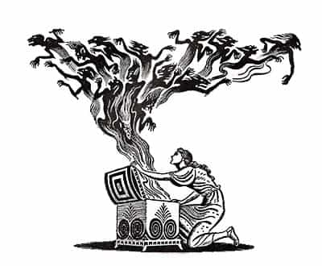

< < < Back
Why Her Past Is Better Left Alone – Return Of Kings
It’s a Pandora’s box that should never be opened.
Do not inquire or think about her past. Never. Don’t even think about thinking about it. It does not concern you and it will only gratuitously hinder your progress. The past cannot be changed, but finding out about it will ramp up your insecurities and ram your confidence harder than a tsunami washes cars off the Fukushima highway. Nothing good can come from nosing around a woman’s past (at least when this nosing is obvious to her). You only shoot yourself in the foot, since inquiring about it screams insecurity.
Your girlfriend might (un)consciously throw you some beta chum by revealing bits of her past as a test of your confidence. Don’t let it shake you, don’t show it bothers you. Ignore it. If she throws something like being in a threesome with two other guys just smirk and tell her that you are fine with threesomes as long as there are two girls involved. Now you have some insight into the dark side of your precious snowflake—milk it into a threesome with that hot girl friend of hers, but never give her full validation and don’t fully reject her when you’re in said threesome. If you can’t pull it off, then shrug it off, don’t give in into her drama, no matter how tempting it is.
What you don’t want to do is use her past to overtly gain the upper hand in your relationship. Using her past to get leverage will always work against you and she’ll harbor a growing resentment towards you. It will make you come across as needy and she will lose interest quickly.
The more women you get to know, the easier it will be for you to spot red flags without asking her about her past. Maybe she’ll blurt out of nowhere that she has slept with 10 other guys. Don’t make a fuss, take a mental note of that and multiply the number by a factor of 5 to 10 to have a somewhat accurate representation of the number of men she’s been with. You now know she’s not girlfriend material.
If she sucks a mean cock you should be thankful to the meters of cock she sucked in order to achieve the royal quality of service you receive. Maybe she cheated on one of her ex-boyfriends, that’s not necessarily alarming, most likely he was an insecure and whiny little chump who couldn’t handle things properly. However, if she cheated on most of her boyfriends, you have a case of flighty vagina on your hands. She is to be pumped and dumped, perhaps kept in orbit if you see it fit, but only if she is fun and her girlfriends are hot and willing. If she cheats on you she’s out. There are no exceptions to this rule.
Betas are always nosing into their girlfriends past like dogs smell turds because of their constant need for validation. Their egos are bloated, volatile, and fragile like the Hindenburg zeppelin. Confident men don’t have ego issues, nor egos for that matter. They have control over their mind, emotions and body.
I’m not saying you should take my advice to the extreme and be blinded to the fact that she has cheated on 9 out of 10 of her exes, she’s a single mom or a crazy stalker. If that’s the case, you most certainly should run like hell in the opposite direction. But as I said before, you don’t really have to ask about her past, just pay attention to the details and it’ll all be revealed in time.
All that you read here or elsewhere is pretty much useless unless you expose yourself to life. Be willing to go out, be bold, be ludicrous and make a lot of mistakes. Your own mistakes are the best way to learn (and even unlearn) new things about the world around you. Most men make the same mistake over and over again because said mistake never registers with them as an actual mistake, and they end up blaming their failures on external factors.
By failing to identify the problem, such men fail to find a path to happiness. They lack the social calibration tools and the knowledge you have at your disposal here on ROK. Society fears and bashes free-thinkers, and it thrives by emasculating men, turning them into easy to control mindless drones.

Here’s the thing: her past is just that, past. It cannot directly have any consequences over you as long as you ignore it. So, just leave it where it belongs: behind you, in the past. Use it to make decisions going forward, but never preoccupy yourself with it.
Your own past, on the other hand, is a priceless repository of both your successes and failures. Use it to learn from it, use it to unlearn what needs to be unlearned, but never ever live in the past. Keep in mind this ancient nugget of wisdom and make it a part of who you are: only a fool trips on what is behind him.
Read More: Unconditional Love From A Woman Is Impossible


{kind=link}